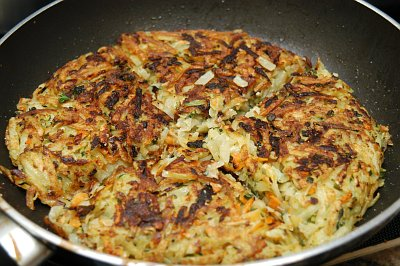

| Zutaten für 4 Personen: | |
| 4-6 | Kartoffeln (festkochend) (roh) |
| 1 | Zucchetti |
| 1-2 | Rüebli |
| 1/4 Bund | Petersilie |
| 1 Kl | Butter |
| 1 | Zwiebel |
| 1 Kl | Mehl |
| 2 | Eier |
| Salz oder Streuwürze | |
| Pfeffer aus der Mühle | |
| Paprika | |
| 1/2 El | Bratbutter |
Kartoffeln schälen, waschen und an der Röstiraffel reiben.
Zucchetti ebenfalls.
Die Rüebli auch schälen aber (dem Abwasch zuliebe) an der Bircherraffel dazu reiben.
Den Petersilie fein hacken, zugeben, mischen.
Die Butter in einer kleinen Bratpfanne schmelzen.
Die Zwiebel fein hacken und in der Butter andämpfen.
Die Zwiebeln zum geraffelten Gemüse beigeben, mischen.
Eier verquirlen und mit dem Mehl zu einer glatten Masse rühren.
Die Ei-Mehl Pappe mit dem Gemüse mischen.
Mit Salz oder Streuwürze, Pfeffer und Paprika würzen und zugedeckt 15 Minuten ruhen lassen.
Bratbutter in einer grossen Bratpfanne erhitzen. Jeweils 1 EL der Gemüsemasse in die Pfanne geben, zu flachen Küchlein formen und auf mittlerer Stufe beidseitig gold-braun braten.
Kochkurs bei Patricia Krummenacher, September 2007
Hat gut geschmeckt. Da wir im Kurs die doppelte Menge hergestellt haben passte uns das nicht mehr einzeln in die 2 grossen Bratpfannen. So haben wir dann eben eine traditionelle Röstiform gewählt. Geschmeckt hat sie trotzdem hervorragend. RE, 27.10.2007
@LINKBACK_TAG@ @WAKELOCK@